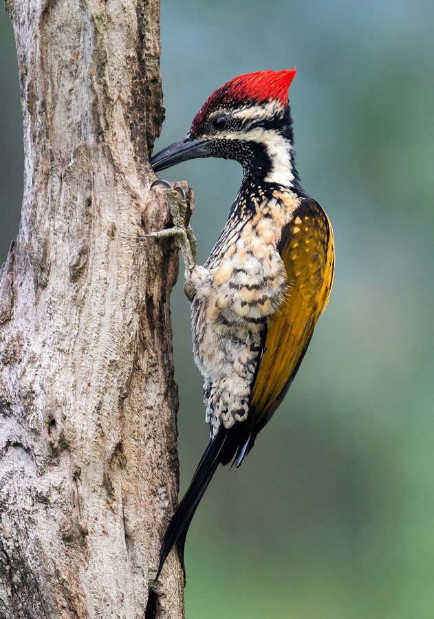

कठफोड़वाBlack-rumped Flameback
Dinopium benghalense · Picidae · BRD-0089

- Scientific nameवैज्ञानिक नाम
- Dinopium benghalense (Linnaeus, 1758)
- Familyकुल
- Picidae
- Hindiहिंदी
- कठफोड़वा / सुनहरा कठफोड़वा
- Local namesस्थानीय नाम
- kathphorwa, kath fodwa, kathkhodwa, kathphodwa, sunehra kathphorwa
- Status hereयहाँ की स्थिति
- native
- Movementआवागमन
- Resident, here all year
- IUCNIUCN
- LC
- Reviewसमीक्षा
- audited and independently read
When to look कब देखें
Present all year.साल भर मौजूद।
Uses and possibilities उपयोग और संभावनाएँ
Drawn from the documented uses in the profile below, where each is labelled traditional, current or a research lead. All uses →
कठफोड़वा / Black-rumped Flameback
Dinopium benghalense (Linnaeus, 1758) — Picidae
कठफोड़वा — एक छोटी लकड़ी की खोदने वाली चिड़िया जिसका शरीर सुनहरा है और पीछे का हिस्सा काला है। यह पेड़ की लकड़ी में छेद करके घोंसला बनाती है और कीड़े निकालकर खाती है। इसकी पेंकिंग की आवाज़ गाँव के बागों में सुनाई देती है।
Quick Identification त्वरित पहचान
| Feature | Description |
|---|---|
| Size | Small woodpecker (23–25 cm total length); slender build |
| Plumage pattern | Striking golden-yellow with dark markings; black rump — distinctive |
| Head and neck | Yellow with dark streaks; male has red forecrown |
| Back | Golden-yellow with black barring and spots |
| Wings | Spotted and barred black-and-gold pattern |
| Underparts | Yellow with black spots |
| Rump | Black — diagnostic (also called "flameback" for the golden back) |
| Tail | Black with yellow edges |
| Bill | Dark, pointed, chisel-like |
Field tip: A small woodpecker with a striking golden-yellow body and black rump. Listen for the rapid-fire "peek-peek-peek-peek-peek" drumming on tree trunks and the sharp "kriek" call.
Morphology आकारिकी
Biometrics (nominate subspecies benghalense, northern India — the form in eastern UP):
| Measurement | Range |
|---|---|
| Total length | 225–250 mm |
| Wing (flattened chord) | 110–125 mm |
| Tail | 65–75 mm |
| Tarsus | 13–15 mm |
| Bill (culmen from base) | 20–24 mm |
| Weight | 28–36 g |
Plumage (male): Head and nape yellow with red forecrown. Back golden-yellow with black spots and barring. Rump black — unique and diagnostic. Wings black with numerous golden spots. Underparts yellow with black spotting. Tail black with yellow outer edges.
Plumage (female): Similar to male but forecrown black (not red); lacks the red patch.
Juveniles: Duller; red on males weaker or absent; overall pattern less distinct.
Bill: Dark grey, pointed and chisel-shaped — adapted for drilling into wood.
Legs and feet: Grey.
Vocalisations
Black-rumped Flameback is relatively quiet compared to some other woodpeckers, but produces several distinctive sounds.
- Drumming: Rapid-fire pecking on tree trunk or dry branch, creating a distinctive "peek-peek-peek-peek" sound; used for territorial advertisement.
- Contact calls: Sharp, loud "kee-kee-kee" or "kriek-kriek", especially when excited.
- Display call: A clear "tee-tee-tee-tee-tee" during courtship and territorial disputes.
Behaviour & Ecology व्यवहार और पारिस्थितिकी
Bark and wood gleaner: Black-rumped Flameback feeds primarily by gleaning wood-boring insects from bark and wood. It probes into crevices and cavities, using its pointed bill to extract beetle larvae, ants, and other arthropods. Hammering is less frequent than in some other woodpeckers.
Hole nesting: Excavates its own nest hole in dead wood or dead branches of living trees, creating a chamber where 2–3 eggs are laid.
Territorial: Pairs hold territories and remain together year-round. Drumming and calling intensify during breeding season.
Solitary and pairs: Usually seen singly or in pairs; rarely forms mixed-species flocks.
Life Cycle / Phenology जीवन चक्र
- January–February: Pair bonds and territorial calling increase
- February–April: Nest hole excavation; drumming most intense
- April–May: Egg-laying (usually 3 eggs); incubation ~13 days
- May–June: Chick feeding by both parents
- July–August: Young fledge; family separates
- September–December: Quieter; birds remain in territory but less vocal
Host Plants or Prey आहार
Primary diet:
- Wood-boring beetle larvae (in tree trunks and branches)
- Carpenter ants and other ants
- Bark-dwelling insects and spiders
- Leaf insects and caterpillars (gleaned from leaves)
- Termites in dead wood
Predators / Natural Enemies शत्रु
- Shikra (Accipiter badius) — preys on adults and fledglings
- Falcon species — occasional predators
- Tree snakes — climb to raid nest holes
- Wasps — infest nest holes
Agricultural / Human Relevance कृषि प्रासंगिकता
Pest control: Black-rumped Flameback consumes large numbers of wood-boring beetles and other wood-dwelling insects. This makes it valuable in orchards where these insects can damage fruit trees. The bird helps control beetle populations that would otherwise require pesticide treatment.
Cavity creation: The nest holes excavated by flamebacks are used subsequently by other species — a common ecological service of woodpeckers.
Cultural presence: Known traditionally as "कठफोड़वा" (wood-breaker) in Hindi; its pecking is a recognized village sound, especially in orchards.
Protected status: Schedule IV of Wildlife (Protection) Act, 1972. Tree damage from woodpecker excavation is minimal and rarely an economic concern.
Expected Locally स्थानीय रूप से अपेक्षित
Not a field record. Written from published accounts for eastern Uttar Pradesh. No confirmed local sighting yet — if you have seen it, that is what the atlas needs.
अभी तक स्थानीय पुष्टि नहीं। यह विवरण प्रकाशित स्रोतों से है, किसी अवलोकन से नहीं।
Black-rumped Flameback is expected in mango groves, orchards, and village gardens throughout Basti and Ayodhya districts. Look for the distinctive golden and black bird on tree trunks and branches. Listen for the rapid drumming sound and sharp "kriek" calls, especially from February to April.
Distribution वितरण
Global range: Indian subcontinent — widespread from Pakistan through India (plains to about 1,500 m) and Bangladesh, east to Myanmar.
In India: Common resident throughout India from the plains up to moderate elevations in the Himalayas.
In Uttar Pradesh: Widely distributed in areas with adequate trees suitable for feeding and nesting.
In Basti district / eastern UP: Expected in orchards and cultivated areas with mature trees; populations vary with habitat quality.
Research Questions शोध प्रश्न
- How many Black-rumped Flamebacks are in the orchards near your village? / आपके गाँव के बागों में कितने हैं? — Walk through orchards counting birds or listening for calls.
- Which trees do they prefer for foraging? / किन पेड़ों पर खाते हैं? — Note tree species and count visits; watch feeding technique.
- How many nest holes do they dig each year? / साल में कितने छेद बनाते हैं? — Mark excavations; monitor for occupancy.
- What insects do they eat in each season? / किस मौसम में क्या कीड़े खाते हैं? — Collect droppings below favoured perches; examine for insect remains.
- Do they damage fruit trees by pecking? / क्या पेड़ों को नुकसान पहुँचाती है? — Compare trees with and without flamebacks; examine bark damage.
Similar Species मिलती-जुलती प्रजातियाँ
| Species | How to tell apart | हिंदी |
|---|---|---|
| Great Flameback (Chrysocolaptes lucidus) | Much larger (33 cm); all golden-yellow with red head; no black rump; deeper call | बड़ा कठफोड़वा — बहुत बड़ा, पूरा लाल सिर |
| Green Woodpecker (Picus canus) | Larger (32 cm); green overall; red undertail; different habitat | हरा कठफोड़वा — हरा, ज़मीन पर |
Field rule: Small golden-yellow woodpecker with black rump + rapid drumming + sharp "kriek" call = Black-rumped Flameback. The black rump is diagnostic.
Taxonomy & Classification वर्गीकरण
Original description. Dinopium benghalense was described by Linnaeus in 1758 as Picus benghalensis, based on specimens from Bengal. The genus Dinopium was erected later and contains three species of flamebacks in Asia.
Subspecies. Several subspecies recognised; benghalensis is the nominate form occurring across northern and central India.
Family and order placement. Order Piciformes; family Picidae (woodpeckers, piculets, wrynecks). The genus Dinopium includes the smallest flamebacks.
Phylogenetic notes. Molecular studies confirm Dinopium as nested within Picidae, close to other Asian woodpecker genera.
IUCN status rationale. Assessed as Least Concern. The species remains widespread and common in suitable habitat throughout its range.
Photo Gallery फोटो गैलरी
Note: Add field photos tomedia/species/black_rumped_flameback/
फोटो निर्देश: पास से (सुनहरा शरीर और काली पीठ दिखाते हुए), पेड़ की लकड़ी में पेकिंग करते हुए, घोंसले के छेद पर, और उड़ते समय।
Photos needed आवश्यक फोटो
- [ ] Close-up showing golden body and black rump (सुनहरा + काली पीठ)
- [ ] Pecking on tree trunk (पेड़ की लकड़ी पर पेकिंग)
- [ ] At nest hole (घोंसले के छेद पर)
- [ ] In flight (उड़ते समय)
- [ ] On mango tree (आम के पेड़ पर)
References संदर्भ
- Linnaeus, C. (1758). Systema Naturae per regna tria naturae, 10th ed. Holmiae, p. 113. [original description]
- Ali, S. & Ripley, S.D. (1987). Handbook of the Birds of India and Pakistan. Vol. 6. Oxford University Press, New Delhi.
- Grimmett, R., Inskipp, C. & Inskipp, T. (2011). Birds of the Indian Subcontinent. 2nd ed. Christopher Helm, London.
- Rasmussen, P.C. & Anderton, J.C. (2005). Birds of South Asia: The Ripley Guide. Smithsonian Institution, Washington.
- Winkler, H. & Christie, D.A. (2002). Family Picidae (Woodpeckers). In: Handbook of the Birds of the World Vol. 7 (pp. 296–555). Lynx Edicions, Barcelona.
- BirdLife International (2024). Dinopium benghalense. IUCN Red List of Threatened Species. Ver. 2024.
- GBIF Occurrence Data — Dinopium benghalense, Uttar Pradesh (2010–2025).
Source file: species/fauna/birds/black_rumped_flameback.md